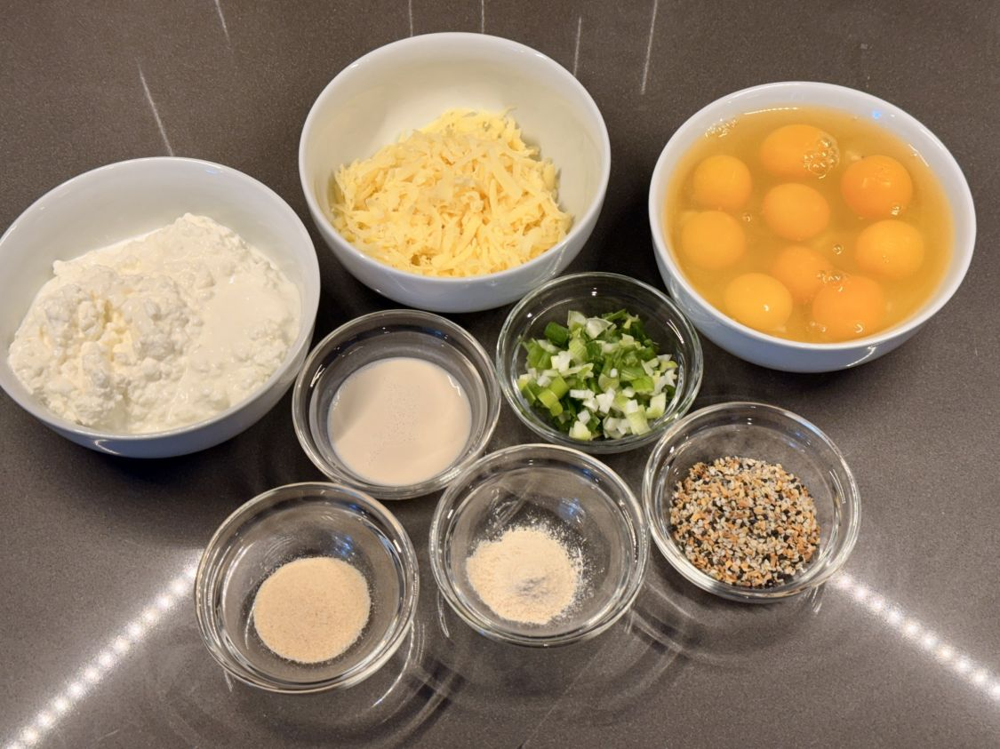
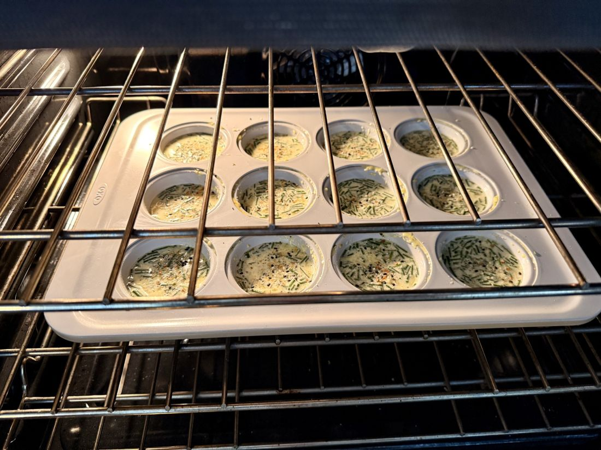
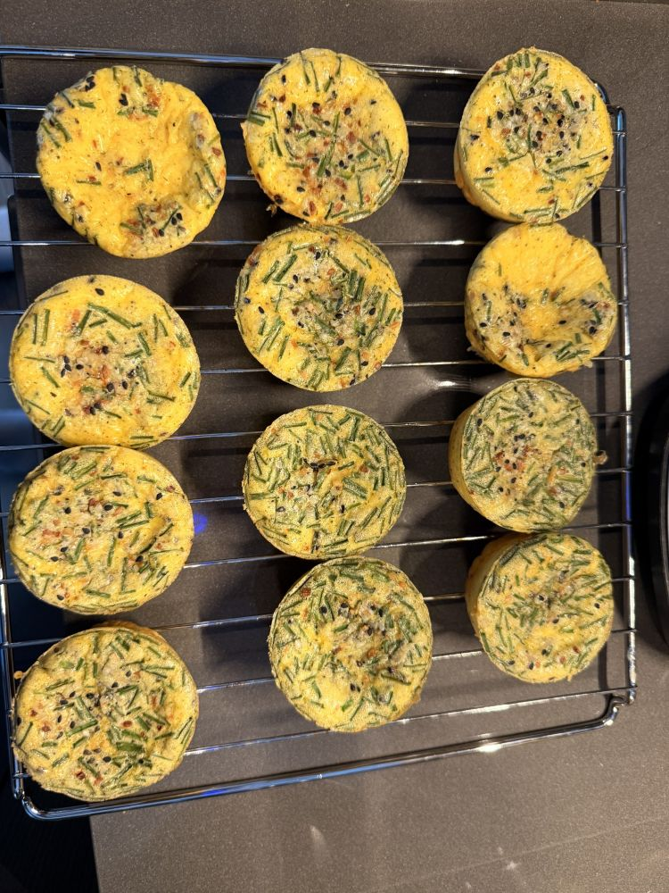
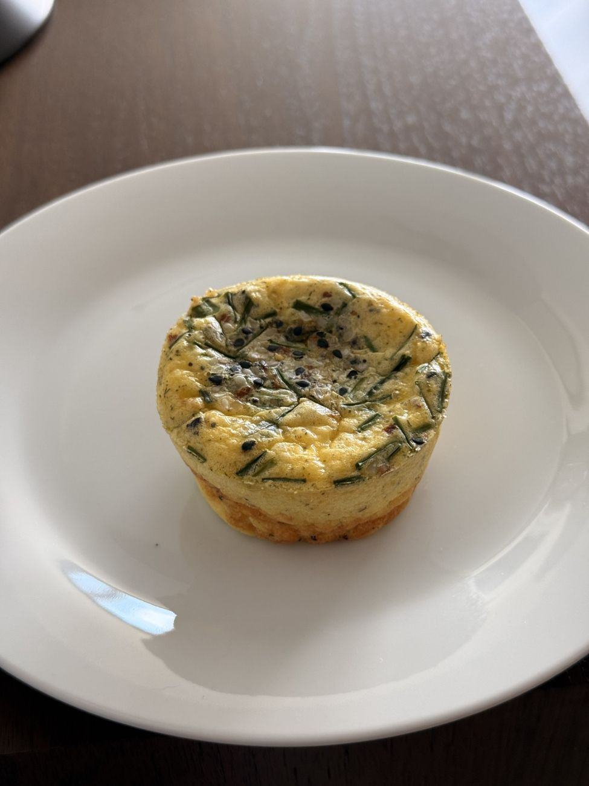

Refined Everything Bagel Egg Cups
An intentional morning ritual—silky, custardy egg cups with the savory comfort of Everything Bagel seasoning and a texture worth getting right.
Overview
Achieving the perfect egg cup is a lesson in restraint. By eschewing the high-speed blender for the controlled pulse of a food processor, and opting for the richness of full-fat cottage cheese, we find a texture that is light yet stable—a morning anchor that resists the wateriness of lesser methods.
This recipe was born from a series of "hard-way" lessons. Low-fat cottage cheese and over-aeration are the enemies of the custardy center we seek.
The secret is the cooling ritual. By allowing the cups to rest in the pan before transitioning to a rack, we allow the internal structure to finish setting, preventing the "tearing" and "sogginess" that plague standard egg muffins.
Ingredients
- 9 large eggs (room temperature)
- 1½ cups full-fat cottage cheese
- 1 tbsp oat creamer
- 6 tbsp shredded cheese (mozzarella or sharp cheddar)
- 3 tbsp chives or green onions, finely chopped
- 3 tbsp Everything Bagel seasoning (divided)
- 1½ tsp garlic powder
- 1½ tsp onion powder
- To taste: Fine sea salt and freshly cracked black pepper
Method
1. Prep
- Preheat oven to 325°F (163°C).
- Chop the green onions and/or chives. We prefer to grate our own cheese using a box grater.
- Lightly grease a standard muffin tin or prepare a silicone pan (liners are not recommended).
2. The Food Processor Blend

- Add the eggs, cottage cheese, oat creamer, garlic powder, onion powder, salt, and pepper to the food processor.
- Pulse and blend until completely smooth with no visible curds; this does not take very long, and in fact, we check it every 10 seconds.
3. The Fold
- Transfer the egg mixture to a bowl. Gently fold in the shredded cheese and chopped chives.
4. Fill and Top
- Pour the mixture into the muffin cups, filling each approximately ¾ full.
- Sprinkle the tops generously with the Everything Bagel seasoning.
5. The Bake

- Bake at 325°F (163°C) for 20–24 minutes.
- The Indicator: You are looking for centers that are just set with a slight jiggle. If they appear "fully firm" in the oven, they are likely overcooked.
6. The Cooling Ritual — Essential!

- Rest in Pan: Let sit for 8–10 minutes in the tin.
- Remove: Run a knife around the edges and lift out carefully.
- Rack Rest: Transfer to a cooling rack for another 5–10 minutes.

Troubleshooting
Spongy or Rubbery: Usually a sign of overbaking or an oven temperature that is too high.
Watery Bottoms: This occurs if you skip the rack rest or if the cottage cheese was not full-fat.